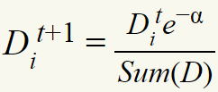
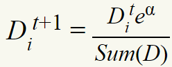
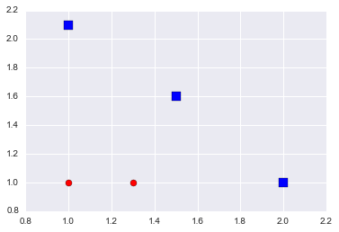
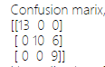
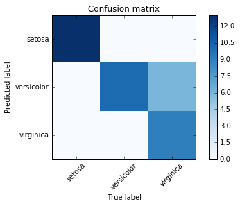
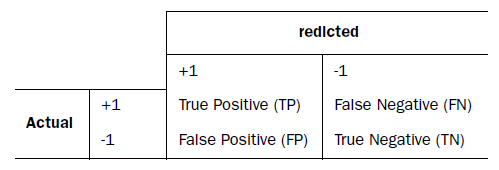
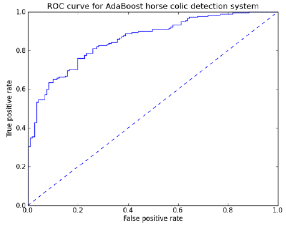
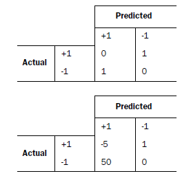

机器学习实战（7）--利用AdaBoost元算法提高分类器性能
2016-07-14
7.1基于数据集多重抽样的分类器
我们将不同的分类器组合起来，这种组合的结果被称为集成方法（ensemble method）或者元算法（meta-algorithm）。
AdaBoost的优缺点：
- 优点：泛化错误率低，易编码，可以应用在大部分分类器上。
- 缺点：对离群点较敏感。
7.1.1bagging：基于数据随机重抽样的分类器构建方法
从原始的数据集上随机放回地抽取S次得到新数据集S个，与原数据集的大小相等，然后将某个学习算法应用于这S个数据集就相当于得到了S个分类器，选择分类器投票结果中最多的类别作为最后的分类结果。随机森林（random forest）就是一种先进的bagging方法。
7.1.2boosting
- 与bagging类似的技术。
- boosting是关注被已有的分类器错分的那些数据来获得新的分类器。
- bagging的每个分类器的权重是一样的，而boosting的分类器的权重代表其对应分类器在上一轮迭代中的成功度。
- boosting有多种版本，AdaBoost最为流行。
7.2训练算法：基于错误提升分类器性能
能否使用弱分类器来构造强分类器呢？这是个有趣的问题。所谓弱分类器意味着分类器的性能比随机猜测的性能略好，而强分类器的错误率就要低很多。
AdaBoost的运算如下:
- 训练数据中的每个样本，并赋予其一个权重D（一开始权重都相等）；
- 训练出一个弱分类器，并计算出分类器的错误率；
- 进行二次训练，根据错误率调整权重，其中分对的样本权重变低，错的样本权重变高；
其中错误率的定义为: e=未正确分类的样本数目/所有样本数目
每个分类器权重alpha的计算公式为： alpha=0.5*ln(1-e/e)
注意：样本的权重是D，分类器的权重是alpha！
如果样本被正确分类，那么更新它的权重如下：

如果样本被错误分类，那么更新它的权重如下：

7.3基于单层决策树构建的弱分类器

要想把上图中的数据点用一条平行于坐标轴的直线分开显然是不可能的。单层决策树难以处理这种问题。
def stumpClassify(dataMatrix,dimen,threshVal,threshIneq):#just classify the data
retArray = ones((shape(dataMatrix)[0],1))
if threshIneq == 'lt':
retArray[dataMatrix[:,dimen] <= threshVal] = -1.0
else:
retArray[dataMatrix[:,dimen] > threshVal] = -1.0
return retArray
def buildStump(dataArr,classLabels,D):
dataMatrix = mat(dataArr); labelMat = mat(classLabels).T
m,n = shape(dataMatrix)
numSteps = 10.0; bestStump = {}; bestClasEst = mat(zeros((m,1)))
minError = inf #init error sum, to +infinity
for i in range(n):#loop over all dimensions
rangeMin = dataMatrix[:,i].min(); rangeMax = dataMatrix[:,i].max();
stepSize = (rangeMax-rangeMin)/numSteps
for j in range(-1,int(numSteps)+1):#loop over all range in current dimension
for inequal in ['lt', 'gt']: #go over less than and greater than
threshVal = (rangeMin + float(j) * stepSize)
predictedVals = stumpClassify(dataMatrix,i,threshVal,inequal)#call stump classify with i, j, lessThan
errArr = mat(ones((m,1)))
errArr[predictedVals == labelMat] = 0
weightedError = D.T*errArr #calc total error multiplied by D
print "split: dim %d, thresh %.2f, thresh ineqal: %s, the weighted error is %.3f" % (i, threshVal, inequal, weightedError)
if weightedError < minError:
minError = weightedError
bestClasEst = predictedVals.copy()
bestStump['dim'] = i
bestStump['thresh'] = threshVal
bestStump['ineq'] = inequal
return bestStump,minError,bestClasEst
上述代码构造了一个决策树的简化版本，是一个弱分类器。接下来就可以构造AdaBoost分类器了。
7.4完整AdaBoost算法的实现
之前构造了一个基于加权输入值来进行决策的分类器，现在将有了实现一个完整AdaBoost算法所需要的所有信息。实现的的伪代码如下：
对每次迭代：
利用buildStump()函数找到最佳的单层决策树
将最佳单层决策树加入到单层决策树群组
计算alpha
计算新的权重向量D
更新累计类别估计值
如果错误率为0.0就退出循环
实际代码：
def adaboostTrainDS(dataArr, classLabels, numIt=40):
weakClassArr=[]
m=shape(dataArr)[0]
D=mat(ones((m,1))/m)
aggClassEst=mat(zeros((m,1)))
for i in range(numIt):
bestStump,error,classEst=buildStump(dataArr,classLabels,D)
print "D:",D.T
alpha=float(0.5*log((1.0-error)/max(error,1e-16)))
bestStump['alpha'] = alpha
weakClassArr.append(bestStump)
print 'classEst:',classEst.T
expon=multiply(-1*alpha*mat(classLabels).T, classEst)
D=multiply(D, exp(expon))
D=D/D.sum()
aggClassEst+=alpha*classEst
print "aggClassEst:", aggClassEst.T
aggErrors=multiply(sign(aggClassEst) != mat(classLabels).T, ones((m,1)))
errorRate=aggErrors.sum()/m
print "total error:" , errorRate,"\n"
if errorRate==0.0:
break
return weakClassArr
- 其中numIt是迭代的次数；
- DS代表单层的决策树，当然可以用其他分类器，所有分类器都可以作为AdaBoost的基分类器；
- 向量D很重要，包含了每个点的分类权重；
- alpha值是基分类器的权重。
7.5非均衡问题
在大多数情况下，不同分类的代价并不相等。我们需要度量分类器性能的方法。
7.5.1其他分类器性能度量的指标：正确率、召回率和ROC曲线
-
混淆矩阵（confused matrix）是个不错的度量方法。

如果非对角线元素都是0，那么就是一个完美的分类器。还可以用下图来直观表示：
 - 对于一个二类问题的混淆矩阵，有
 - 正确率（precision），它等于TP/(TP+FP)
- 召回率（recall），它等于TP/(TP+FN)
- 构造正确率或者召回率高的分类器是容易的，但很难保证两者同时成立。
- ROC曲线：

图中的ROC曲线中给了两条线，横轴是伪正例的比例（假阳率=FP/(FP+TN)），而纵轴是真阳例的比例（真阳率=TP/(TP+FN)）。虚线是随机猜测的结果曲线。
在理想情况下，最佳的分类器应该尽可能的位于左上角。
对于不同的ROC曲线比较的一个指标是ROC曲线下的面积（Area Under the Curve）。一个完美分类器的AUC是1.0，随机猜测的AUC是0.5。
7.5.2基于代价函数分类器决策控制

表中的第二个与第一个的代价函数是不同的，我们可以基于代价函数来找到拥有最小代价的分类器，用来更新权重D。